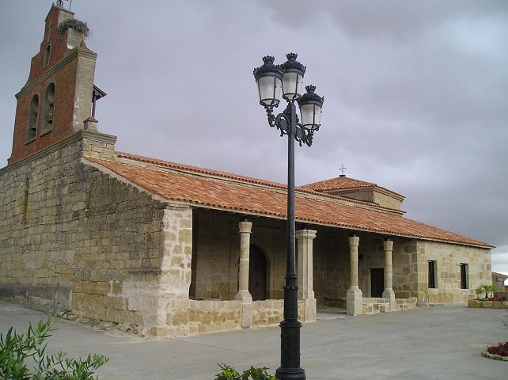

Se encuentra ubicado en la comarca de Aliste, al oeste de la provincia de Zamora y cerca de la frontera con Portugal. El municipio está formado por el territorio correspondiente a los términos de Boya, Las Torres de Aliste, Mahíde, Pobladura de Aliste y San Pedro de las Herrerías.
Esta localidad tiene muchos edificos con una gran antiguedad y el edificio más significativo del pueblo es su iglesia parroquial que tiene una gran historia, construida en el siglo XVII, del que resalta su esbelta espadaña. En cuanto a las construcciones civiles, destacan los molinos que se suceden a lo largo de la ribera del río Aliste. A pesar de la no supervivencia de edificios antiguos, hay documentos que señalan que antes de 1167 Afonso Henriques, primer rey de Portugal, lo donó al monasterio de San Martín de la Castañeda.
Tambien hay que decier que esta localidad ha sido uno de los terrenos funebres ya que se han encontrado muchos restor arqueologicos.
Esta localidad tambien hay que decir que fue reconquistada por los reyes catolicos y fue arrevatad a los moros en las gerras cristianas
Esta localidad celebra San Bartolomé, a finales del mes de agosto, y la fiesta en honor a la Virgen de La Asunción, el día 15 del mismo mes.y lo hacen como muchos pueblos para que el verano que viene sea mejor que el anterior y lo llevan haciendo mucho tiempo ya que dice la gente mallor que si nose hace que el año siguiente va a traer muchas desgracias y no va a ser nada bueno para el pueblo